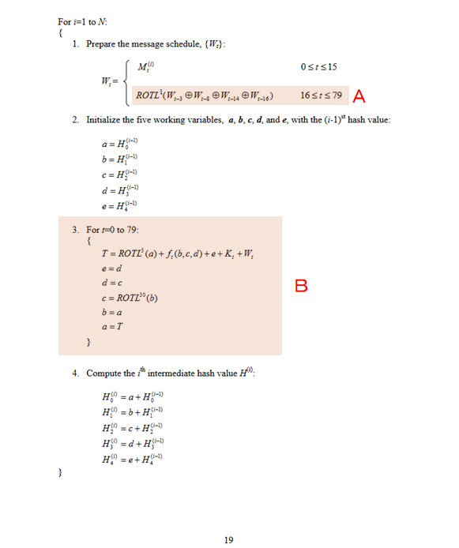
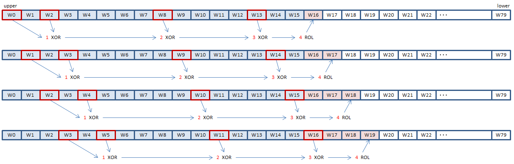

Caution: This page is about SHA1 instructions of Intel SHA Extensions, that cannot be used on most of current mainstream processors yet.
As for SHA1, FIPS 180-4 issued by the government agency of the United States, is the original specification.
The following is the algorithm to calculate the hash value from the pre-processd 64-BYTE (16-DWORD) message blocks, defined on page 19 of FIPS 180-4.

SHA1MSG1 and SHA1MSG2 instructions help the calculation of A above.
SHA1RNDS4 and SHA1NEXTE instructions help the processing of B above.
The expression of A is the calculation of the DWORD values to be appended to the pre-processed 16-DWORD message block, to generate the 80-DWORD W array.
To calculate the SHA hash on x86/x64, the byte order within each DWORD has to be swapped, because SHA calculations are based on big-endian. Besides, the DWORD order within each XMMWORD should be swapped to use SHA1 instructions. Moreover, in this page, the byte order of the whole W array is swapped, to make the illustration easier to understand.
The A expression specifies to XOR the values of W[t-16], W[t-14], W[t-8], W[t-3], then rotate. The result is set to W[t].

SHA1 instructions make it possible to do this, 4 elements at a time.
SHA1MSG1 instruction does the XORing of 1 in the illustration above.
SHA1MSG2 instruction does the XORing and ROLing of 3 and 4.
Ordinary SIMD PXOR instruction does the XORing of 2.
Does the XORing of 1 and returns the result in (3).
Does the calculation of 3 and 4, and returns the result in (3).
Inputs: (1) = result of 2. (2) = the elements of the W array.
B loops through all 80 elements of the W array to update five state variables a, b, c, d and e.
Executing SHA1RNDS4 and SHA1NEXTE instructions, each once, 4 rounds of the loop are processed.
SHA1RNDS4 instruction has only 4 locations to pass the state variables, so the state variables a, b, c and d are passed separately. The state variable e is added into the first element of the W array and passed to the instruction.
For the first round of the loop, W0 + e must be calculated before executing SHA1RNDS4 instruction. For the following rounds, SHA1NEXTE instruction adds e to the next W array elements.
Does 4 rounds of B loop to calculate updated state variables a', b', c', and d'.
Inputs: (1) = the state variables a, b, c and d. (2) = the W array elements (with the state variable e added to the first element).
Output: (3) = the state variables a', b', c', d' updated after 4 rounds.
imm8 = 0 for the first 20 rounds of the loop, 1 for the next 20 rounds of the loop..., 3 for the last 20 rounds of the loop.
Calculates the state variable e' updated after 4 rounds.
Inputs: (1) = the state variable a (before the 4 rounds). (2) = the elements of W array for next 4 rounds.
Output: (3) = the elements of the W array for the next 4 rounds, with the updated state variable e' added to the first element.
For the last round of the loop, you can specify zero for (2) to obtain the e' value itself, or better off specifying H4:0:0:0 for (2) to get e' added to H4. (Note that the value of e' is computed only from (1), and values of (2) don't affect the computation of the value of e'.)
#pragma once
#include <intrin.h>
class SHA1H
{
protected:
// Message block
static const size_t MBYTES = 64;
unsigned char msgbuf[MBYTES];
size_t msgbuf_count; // length (in byte) of the data currently in the message block
unsigned __int64 total_count; // total length (in byte) of the message
// Intermediate hash
__m128i h0123; // h0 : h1 : h2 : h3
__m128i h4; // h4 : 0 : 0 : 0
public:
SHA1H() { Initialize(); }
~SHA1H() {}
void Update(const void* buf, size_t length);
void Final(void* digest);
protected:
void Initialize();
void ProcessMsgBlock(const unsigned char* msg);
};
#include <memory.h> #include "SHA1H.h" // Initial hash value (see FIPS 180-4 5.3.1) #define H0 0x67452301 #define H1 0xefcdab89 #define H2 0x98badcfe #define H3 0x10325476 #define H4 0xc3d2e1f0 void SHA1H::Initialize() { h0123 = _mm_set_epi32(H0, H1, H2, H3); h4 = _mm_set_epi32(H4, 0, 0, 0); msgbuf_count = 0; total_count = 0; } void SHA1H::Update(const void* buf, size_t length) { const unsigned char* p = (const unsigned char*)buf; total_count += length; // If any bytes are left in the message buffer, // fullfill the block first if (msgbuf_count) { size_t c = MBYTES - msgbuf_count; if (length < c) { memcpy(msgbuf + msgbuf_count, p, length); msgbuf_count += length; return; } else { memcpy(msgbuf + msgbuf_count, p, c); p += c; length -= c; ProcessMsgBlock(msgbuf); msgbuf_count = 0; } } // When we reach here, we have no data left in the message buffer while (length >= MBYTES) { // No need to copy into the internal message block ProcessMsgBlock(p); p += MBYTES; length -= MBYTES; } // Leave the remaining bytes in the message buffer if (length) { memcpy(msgbuf, p, length); msgbuf_count = length; } } void SHA1H::Final(void* digest) { // Add the terminating bit msgbuf[msgbuf_count++] = 0x80; // Need to set total length in the last 8-byte of the block. // If there is no room for the length, process this block first if (msgbuf_count + 8 > MBYTES) { // Fill zeros and process memset(msgbuf + msgbuf_count, 0, MBYTES - msgbuf_count); ProcessMsgBlock(msgbuf); msgbuf_count = 0; } // Fill zeros before the last 8-byte of the block memset(msgbuf + msgbuf_count, 0, MBYTES - 8 - msgbuf_count); // Set the length of the message in big-endian __m128i tmp = _mm_loadl_epi64((__m128i*)&total_count); tmp = _mm_slli_epi64(tmp, 3); // convert # of bytes to # of bits const __m128i total_count_byteswapindex = _mm_set_epi8(-1, -1, -1, -1, -1, -1, -1, -1, 0, 1, 2, 3, 4, 5, 6, 7); tmp = _mm_shuffle_epi8(tmp, total_count_byteswapindex); // convert to big endian _mm_storel_epi64((__m128i*)(msgbuf + MBYTES - 8), tmp); // Process the last block ProcessMsgBlock(msgbuf); // Set the resulting hash value, upside down const __m128i byteswapindex = _mm_set_epi8(0, 1, 2, 3, 4, 5, 6, 7, 8, 9, 10, 11, 12, 13, 14, 15); __m128i r0123 = _mm_shuffle_epi8(h0123, byteswapindex); __m128i r4 = _mm_shuffle_epi8(h4, byteswapindex); unsigned __int32* digestdw = (unsigned __int32*)digest; _mm_storeu_si128((__m128i*)digestdw, r0123); digestdw[4] = _mm_cvtsi128_si32(r4); } void SHA1H::ProcessMsgBlock(const unsigned char* msg) { // Cyclic W array // We keep the W array content cyclically in 4 variables // Initially: // cw0 = w0 : w1 : w2 : w3 // cw1 = w4 : w5 : w6 : w7 // cw2 = w8 : w9 : w10 : w11 // cw3 = w12 : w13 : w14 : w15 const __m128i byteswapindex = _mm_set_epi8(0, 1, 2, 3, 4, 5, 6, 7, 8, 9, 10, 11, 12, 13, 14, 15); const __m128i* msgx = (const __m128i*)msg; __m128i cw0 = _mm_shuffle_epi8(_mm_loadu_si128(msgx), byteswapindex); __m128i cw1 = _mm_shuffle_epi8(_mm_loadu_si128(msgx + 1), byteswapindex); __m128i cw2 = _mm_shuffle_epi8(_mm_loadu_si128(msgx + 2), byteswapindex); __m128i cw3 = _mm_shuffle_epi8(_mm_loadu_si128(msgx + 3), byteswapindex); // Advance W array cycle // Inputs: // CW0 = w[t-16] : w[t-15] : w[t-14] : w[t-13] // CW1 = w[t-12] : w[t-11] : w[t-10] : w[t-9] // CW2 = w[t-8] : w[t-7] : w[t-6] : w[t-5] // CW3 = w[t-4] : w[t-3] : w[t-2] : w[t-1] // Outputs: // CW1 = w[t-12] : w[t-11] : w[t-10] : w[t-9] // CW2 = w[t-8] : w[t-7] : w[t-6] : w[t-5] // CW3 = w[t-4] : w[t-3] : w[t-2] : w[t-1] // CW0 = w[t] : w[t+1] : w[t+2] : w[t+3] #define CYCLE_W(CW0, CW1, CW2, CW3) \ CW0 = _mm_sha1msg1_epu32(CW0, CW1); \ CW0 = _mm_xor_si128(CW0, CW2); \ CW0 = _mm_sha1msg2_epu32(CW0, CW3); __m128i state1 = h0123; // state1 = a : b : c : d __m128i w_next = _mm_add_epi32(cw0, h4); // w_next = w0+e : w1 : w2 : w3 __m128i state2; // w0 - w3 state2 = _mm_sha1rnds4_epu32(state1, w_next, 0);// state2 = a' : b' : c' : d' w_next = _mm_sha1nexte_epu32(state1, cw1); // w_next = w4+e' : w5 : w6 : w7 // w4 - w7 state1 = _mm_sha1rnds4_epu32(state2, w_next, 0); w_next = _mm_sha1nexte_epu32(state2, cw2); // w8 - w11 state2 = _mm_sha1rnds4_epu32(state1, w_next, 0); w_next = _mm_sha1nexte_epu32(state1, cw3); // w12 - w15 CYCLE_W(cw0, cw1, cw2, cw3); // cw0 = w16 : w17 : w18 : w19 state1 = _mm_sha1rnds4_epu32(state2, w_next, 0); w_next = _mm_sha1nexte_epu32(state2, cw0); // w16 - w19 CYCLE_W(cw1, cw2, cw3, cw0); // cw1 = w20 : w21 : w22 : w23 state2 = _mm_sha1rnds4_epu32(state1, w_next, 0); w_next = _mm_sha1nexte_epu32(state1, cw1); // w20 - w23 CYCLE_W(cw2, cw3, cw0, cw1); // cw2 = w24 : w25 : w26 : w27 state1 = _mm_sha1rnds4_epu32(state2, w_next, 1); w_next = _mm_sha1nexte_epu32(state2, cw2); // w24 - w27 CYCLE_W(cw3, cw0, cw1, cw2); // cw3 = w28 : w29 : w30 : w31 state2 = _mm_sha1rnds4_epu32(state1, w_next, 1); w_next = _mm_sha1nexte_epu32(state1, cw3); // w28 - w31 CYCLE_W(cw0, cw1, cw2, cw3); // cw0 = w32 : w33 : w34 : w35 state1 = _mm_sha1rnds4_epu32(state2, w_next, 1); w_next = _mm_sha1nexte_epu32(state2, cw0); // w32 - w35 CYCLE_W(cw1, cw2, cw3, cw0); // cw1 = w36 : w37 : w38 : w39 state2 = _mm_sha1rnds4_epu32(state1, w_next, 1); w_next = _mm_sha1nexte_epu32(state1, cw1); // w36 - w39 CYCLE_W(cw2, cw3, cw0, cw1); // cw2 = w40 : w41 : w42 : w43 state1 = _mm_sha1rnds4_epu32(state2, w_next, 1); w_next = _mm_sha1nexte_epu32(state2, cw2); // w40 - w43 CYCLE_W(cw3, cw0, cw1, cw2); // cw3 = w44 : w45 : w46 : w47 state2 = _mm_sha1rnds4_epu32(state1, w_next, 2); w_next = _mm_sha1nexte_epu32(state1, cw3); // w44 - w47 CYCLE_W(cw0, cw1, cw2, cw3); // cw0 = w48 : w49 : w50 : w51 state1 = _mm_sha1rnds4_epu32(state2, w_next, 2); w_next = _mm_sha1nexte_epu32(state2, cw0); // w48 - w51 CYCLE_W(cw1, cw2, cw3, cw0); // cw1 = w52 : w53 : w54 : w55 state2 = _mm_sha1rnds4_epu32(state1, w_next, 2); w_next = _mm_sha1nexte_epu32(state1, cw1); // w52 - w55 CYCLE_W(cw2, cw3, cw0, cw1); // cw2 = w56 : w57 : w58 : w59 state1 = _mm_sha1rnds4_epu32(state2, w_next, 2); w_next = _mm_sha1nexte_epu32(state2, cw2); // w56 - w59 CYCLE_W(cw3, cw0, cw1, cw2); // cw3 = w60 : w61 : w62 : w63 state2 = _mm_sha1rnds4_epu32(state1, w_next, 2); w_next = _mm_sha1nexte_epu32(state1, cw3); // w60 - w63 CYCLE_W(cw0, cw1, cw2, cw3); // cw0 = w64 : w65 : w66 : w67 state1 = _mm_sha1rnds4_epu32(state2, w_next, 3); w_next = _mm_sha1nexte_epu32(state2, cw0); // w64 - w67 CYCLE_W(cw1, cw2, cw3, cw0); // cw1 = w68 : w69 : w70 : w71 state2 = _mm_sha1rnds4_epu32(state1, w_next, 3); w_next = _mm_sha1nexte_epu32(state1, cw1); // w68 - w71 CYCLE_W(cw2, cw3, cw0, cw1); // cw2 = w72 : w73 : w74 : w75 state1 = _mm_sha1rnds4_epu32(state2, w_next, 3); w_next = _mm_sha1nexte_epu32(state2, cw2); // w72 - w75 CYCLE_W(cw3, cw0, cw1, cw2); // cw3 = w76 : w77 : w78 : w79 state2 = _mm_sha1rnds4_epu32(state1, w_next, 3); w_next = _mm_sha1nexte_epu32(state1, cw3); // w76 - w79 state1 = _mm_sha1rnds4_epu32(state2, w_next, 3); // state1 = final a : b : c : d h4 = _mm_sha1nexte_epu32(state2, h4); // Add final e to h4 h0123 = _mm_add_epi32(state1, h0123); // Add final a:b:c:d to h0:h1:h2:h3 }